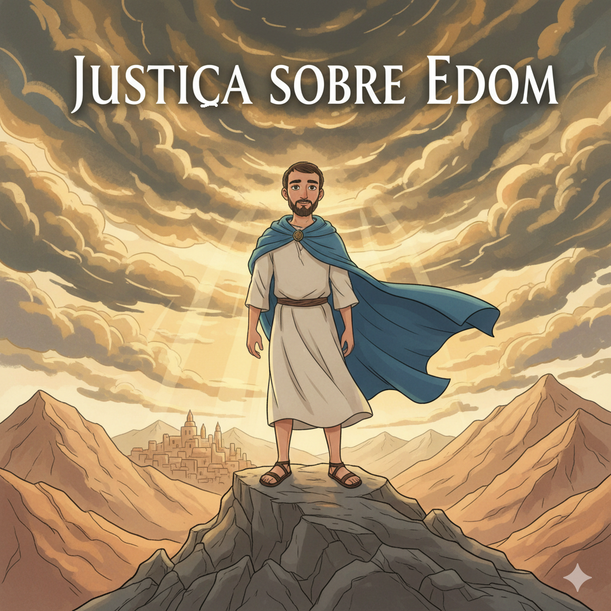
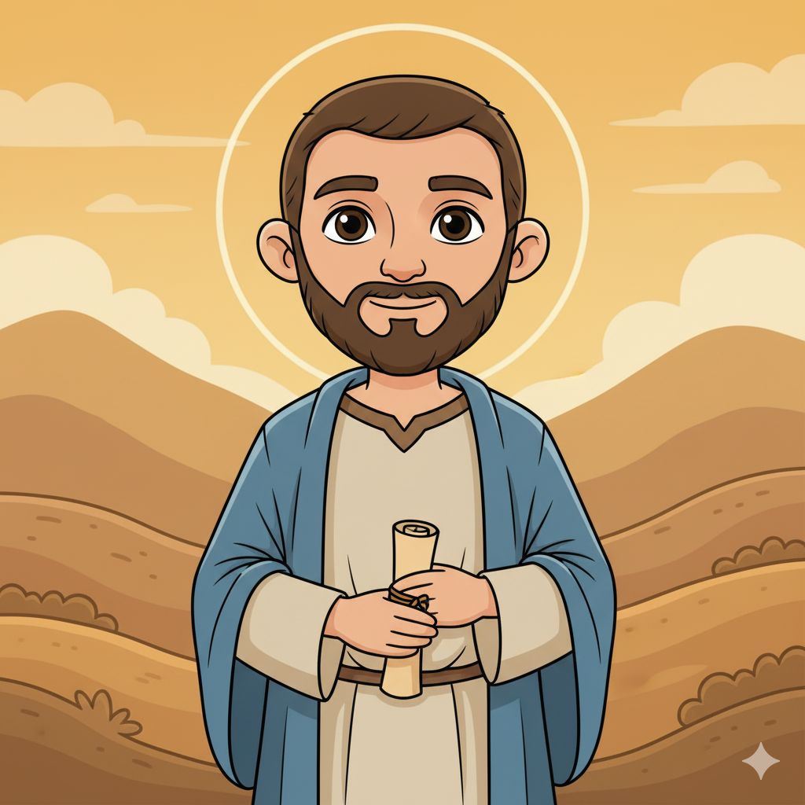
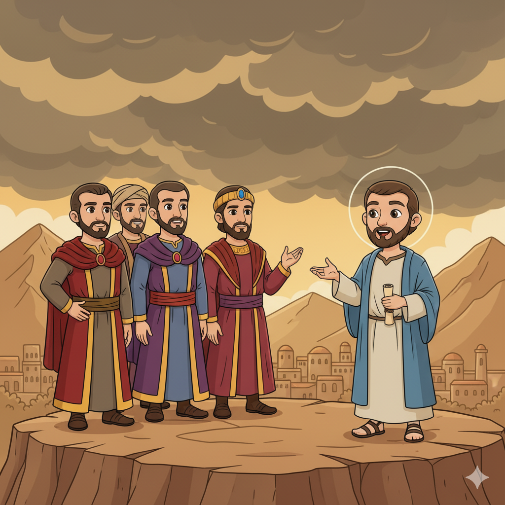
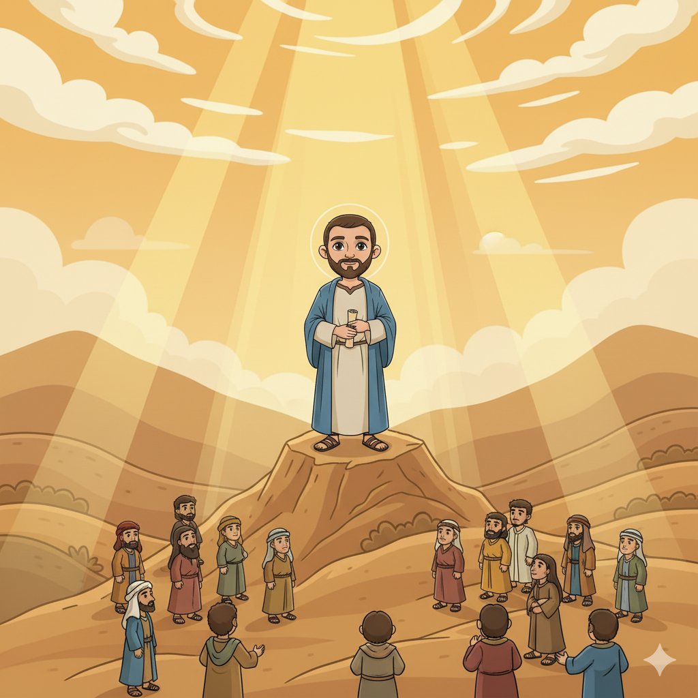
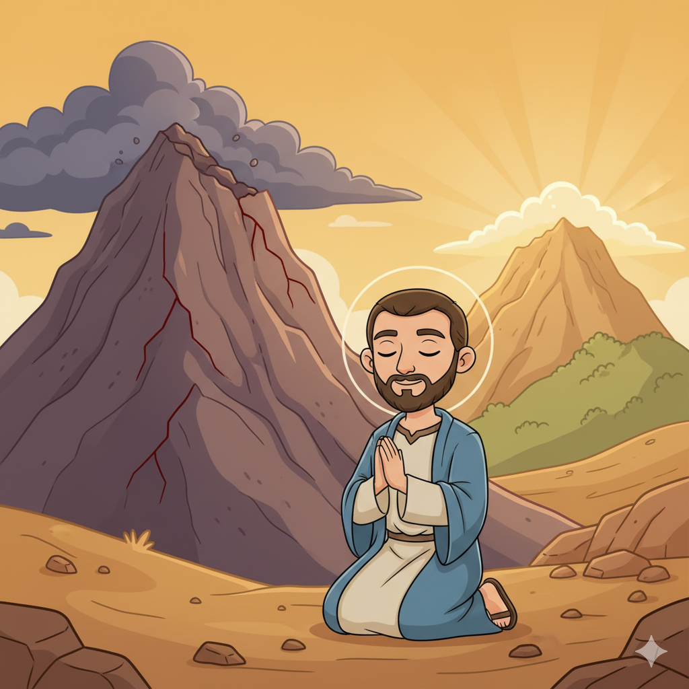
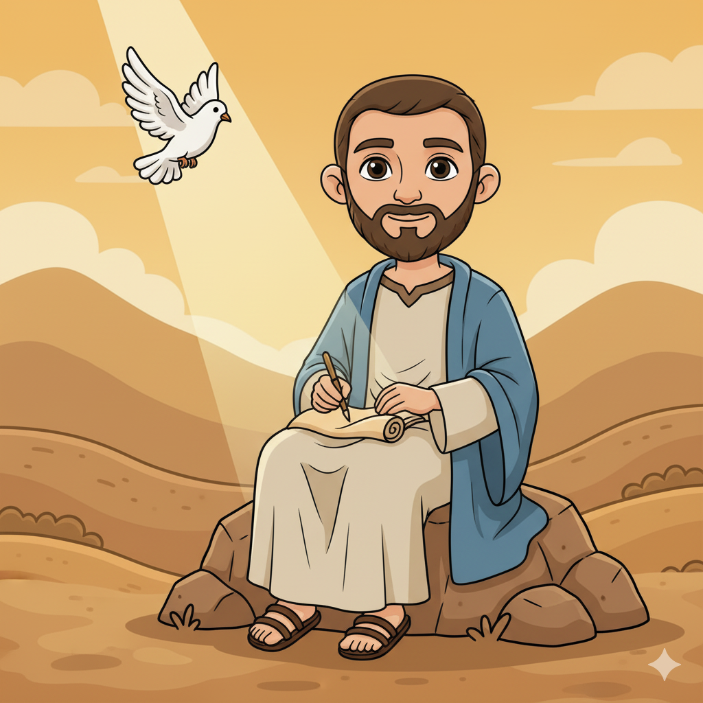

O Menor Livro com a Maior Lição — Um Resumo Visual para Crianças
Nas rochas vermelhas de Petra, bem no alto,
Edom gritava: "Ninguém nos alcança — isso é certo!"
Mas o orgulho enganou o coração de pedra deles,
Pois Deus derruba os montes e os castelos!
Quanto mais alto você sobe por orgulho e vaidade,
Maior será a queda — essa é a realidade!
📖 Obadias 3-4 — "O orgulho do teu coração te enganou... Ainda que subas como a águia... eu te derrubarei."
Edom e Israel eram primos — irmãos desde a origem,
Mas quando Judá caiu, Edom aplaudiu a tragédia sem fim!
Bloqueou os refugiados, os entregou ao inimigo cruel,
"Como fizeste ao teu irmão, assim te farão" — diz o céu!
A lei que governa o mundo é simples e real:
O que você semeia no irmão, você colherá igual!
📖 Obadias 15 — "Assim como fizeste, se te fará; as tuas obras tornarão sobre a tua própria cabeça."
Impérios sobem e caem como maré,
Mas o Reino de Deus permanece de pé!
Edom acabou, Babilônia virou pó e vento,
Mas o povo de Deus tem um eterno fundamento!
A última palavra da história não é dos poderosos —
É do Senhor, que reina sobre todos os povos!
📖 Obadias 21 — "E o reino será do Senhor." (A última palavra do livro!)
👑
"Assim como fizeste, se te fará; as tuas obras tornarão sobre a tua própria cabeça."
Obadias 15
Este é um dos princípios mais universais da Bíblia: o que você faz aos outros, especialmente aos mais vulneráveis, volta para você. Jesus ensinou o mesmo: "Com a medida que medirdes, também vos será medido" (Mt 7:2).
O nome Obadias significa "servo do Senhor". Quase nada sabemos sobre ele — nem sua tribo, nem sua época exata. Mas Deus o escolheu para entregar a mensagem mais curta e direta do Antigo Testamento: 21 versículos que ensinam sobre orgulho, traição e justiça divina.
📖 Leia na Bíblia — Obadias 1
"Visão de Obadias. Assim diz o Senhor Deus acerca de Edom."
Os edomitas eram descendentes de Esaú — irmão gêmeo de Jacó (Israel). Viviam nas montanhas rochosas de Petra, no sul da atual Jordânia. Quando Babilônia destruiu Jerusalém (586 a.C.), Edom não apenas não ajudou — aplaudiu, bloqueou os refugiados e até entregou fugitivos aos inimigos.
📖 Leia na Bíblia — Obadias 10
"Por causa da violência contra teu irmão Jacó, te cobrirá vergonha, e serás destruído para sempre."
Judá (Israel do Sul) havia sido devastado pela Babilônia. Jerusalém estava em ruínas, o templo destruído, o povo levado cativo. Nesse momento de colapso total, o irmão vizinho (Edom) deveria ter ajudado — mas escolheu se aproveitar. A mensagem de Obadias é de consolo: Deus viu e não ficou quieto!
📖 Leia na Bíblia — Obadias 17
"Mas no monte Sião haverá livramento, e será um lugar santo; e a casa de Jacó possuirá as suas possessões."


📖 Leia em casa!
Obadias tem apenas 1 capítulo e 21 versículos — o menor livro do Antigo Testamento! Cabe em menos de 5 minutos de leitura. Perfeito para ler com a família!
🏔️ Parte 1 (v. 1–9): A Condenação do Orgulho
Deus declara guerra ao orgulho de Edom. Eles viviam nas rochas vermelhas de Petra, inacessíveis, e se sentiam invencíveis. Deus responde: "Ainda que subas como a águia... de lá te farei descer!" O orgulho é uma armadilha — quanto mais alto, mais dura é a queda.
📖 Obadias 3 — "O orgulho do teu coração te enganou, ó tu que habitas nas fendas da rocha."
😈 Parte 2 (v. 10–14): Os Sete Crimes Contra o Irmão
Obadias lista 7 crimes de Edom contra Judá no dia da queda: ficar olhando sem ajudar, alegrar-se com a desgraça, falar orgulhosamente, entrar pela cidade saqueando, bloquear as fugas, entregar refugiados, e se apoderar de bens. Cada "não deverias ter" é uma acusação direta!
📖 Obadias 12 — "Não devias ter-te alegrado com os filhos de Judá no dia da sua ruína."
👑 Parte 3 (v. 15–21): O Dia do Senhor e a Restauração
O Dia do Senhor chegará sobre todas as nações. Edom receberá de volta exatamente o que fez. Mas Israel será restaurado — e a última linha do livro é a promessa mais gloriosa: "E o reino será do Senhor." Toda a história caminha para esse fim!
📖 Obadias 21 — "E o reino será do Senhor."
Edom se achava seguro e superior. A Bíblia inteira confirma o que Obadias ensina: "Deus resiste aos soberbos, mas dá graça aos humildes" (Tg 4:6). O orgulho nos faz enxergar menos do que a realidade — e nos faz tomar decisões destrutivas.
📖 Obadias 3
"O orgulho do teu coração te enganou."
Edom pensou que poderia trair sem consequência. Mas Deus não ignora a injustiça — especialmente a que acontece contra os mais fracos. O silêncio diante do sofrimento do irmão também é condenado. "Não deverias ter ficado olhando!"
📖 Obadias 15
"Assim como fizeste, se te fará; as tuas obras tornarão sobre a tua própria cabeça."
"O reino será do Senhor" (v.21) é a profecia que Jesus cumpriu. Ele veio proclamar que o Reino de Deus chegou. E curiosamente, Herodes — que tentou matar Jesus bebê — era idumeu, descendente de Edom! O conflito Jacó × Esaú chegou até o Natal!


Judá estava em ruínas. O templo, destruído. A cidade, queimada. O povo, exilado. E o vizinho (Edom) havia ajudado os inimigos. Obadias foi enviado para dizer: Deus viu tudo. Deus não esqueceu. Deus fará justiça. Isso era o consolo necessário!
📖 Obadias 17
"Mas no monte Sião haverá livramento, e será um lugar santo."
O propósito maior é afirmar que a história tem um Juiz. Impérios e nações que oprimem, que se alegram com o sofrimento alheio, que traem os mais fracos — todos terão que prestar contas. O reino humano passa; o Reino de Deus permanece!
📖 Obadias 21
"E o reino será do Senhor."
🌟 Lição Principal: Não há posição tão elevada que proteja alguém do julgamento de Deus. E não há situação tão destruída que Deus não possa restaurar. O povo de Deus tem consolo: o reino será do Senhor — sempre!
📏 O menor livro do AT: Obadias tem apenas 21 versículos — o livro mais curto de todo o Antigo Testamento. Para comparar: o Salmo 119 sozinho tem 176 versículos — mais de 8 vezes o tamanho de Obadias inteiro!
🏙️ Petra — a cidade nas rochas: Edom vivia em Petra, uma cidade incrível escavada na rocha vermelha no deserto da Jordânia. Hoje é patrimônio mundial da UNESCO e um dos lugares mais visitados do mundo! Mas a nação edomita acabou exatamente como Obadias profetizou.
👑 Herodes era edomita: Herodes, o rei que tentou matar Jesus bebê (Mateus 2), era idumeu — descendente de Edom! O conflito entre Esaú (Edom) e Jacó (Israel) que começou no ventre de Rebeca (Gn 25) chegou até o nascimento de Jesus. E Jesus, o verdadeiro Rei de Israel, venceu!

"O reino será do Senhor" (Ob 21) é a promessa que Jesus cumpriu ao proclamar: "O Reino de Deus está próximo!" (Mc 1:15). Todo o ministério de Jesus foi a inauguração desse Reino eterno que Obadias anunciou.
Herodes, o Grande — que ordenou a chacina dos bebês para matar Jesus — era idumeu, descendente direto de Edom. O ódio de Esaú por Jacó chegou até o Natal. Mas assim como Obadias prometeu, o "filho de Jacó" (Jesus) prevaleceu!
O versículo "como fizeste, se te fará" (Ob 15) ressoa em Jesus: "Com a medida que medirdes, também vos será medido" (Mt 7:2). A lei da reciprocidade que Obadias anuncia é confirmada pelo próprio Jesus!
Obadias e o nascimento de Jesus
"Herodes, ao ver que fora iludido pelos magos, irritou-se muito... mandou matar todos os meninos... Esta palavra tinha sido dita pelo Senhor por intermédio do profeta." (Mateus 2:16-17)
📖 Mateus 2:16
Herodes (edomita, descendente de Esaú) tentou destruir Jesus (descendente de Jacó/Israel) — o mesmo conflito de Obadias! Mas o "reino do Senhor" não pode ser destruído por nenhum Herodes.
Converse com sua família, turma ou professor sobre essas perguntas!
🏔️
Edom se achava invencível nas suas montanhas — e o orgulho o destruiu. Existe alguma área na sua vida onde você se acha "superior" ou invencível? Como o orgulho pode te enganar?
👀
Edom foi condenado também por ficar olhando sem ajudar. Você já viu alguém sendo maltratado e ficou em silêncio? O que Obadias diz sobre essa escolha? O que você poderia fazer diferente?
👑
O livro termina com "o reino será do Senhor." Quando as coisas ao redor parecem injustas e os maus parecem vencer, como essa promessa te ajuda a não desanimar e continuar confiando em Deus?
Escolha um desafio (ou faça os três!) e seja um explorador da Bíblia!
🙏
Pense numa situação recente onde você agiu com orgulho — se achou melhor que alguém, não pediu ajuda, ou não admitiu um erro. Converse com Deus e, se necessário, com a pessoa. Humildade é força!
📖
São apenas 21 versículos — menos de 5 minutos! Leia em voz alta para alguém da família. Depois pergunte juntos: o que Edom fez de errado? O que podemos aprender sobre como tratar os outros?
🤝
Edom foi condenado por não ajudar. Esta semana, escolha alguém que esteja passando por dificuldade e faça algo concreto — uma palavra, um gesto, uma ajuda real. Seja o oposto de Edom!
Trilho Kids | Desenvolvido com ❤️ para crianças © 2025